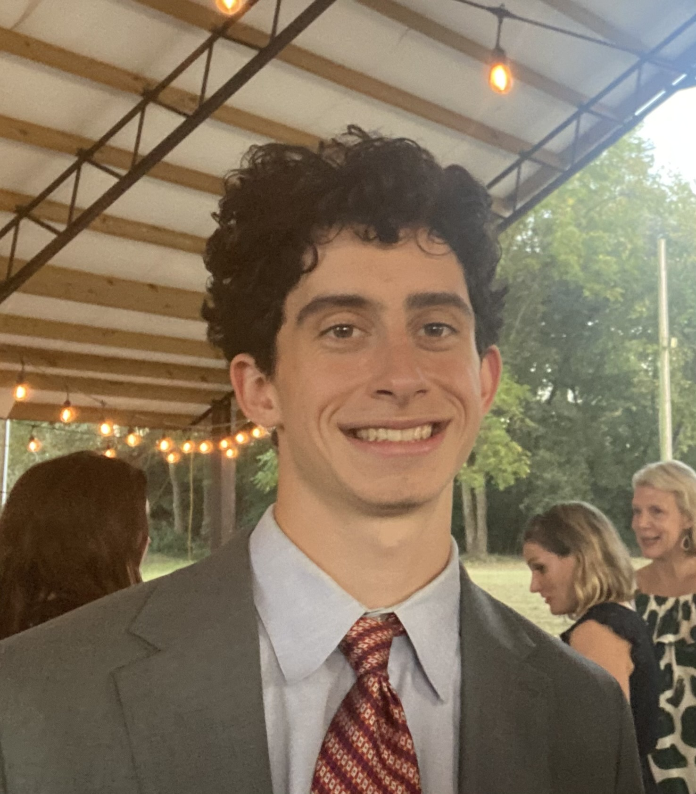
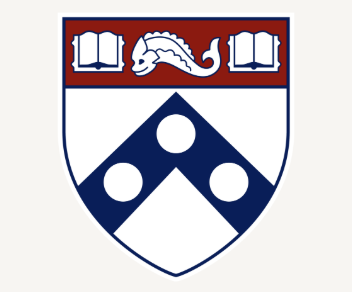

Brian Rettig
MS/PhD Student, Electrical and Systems Engineering, University of Pennsylvania
Advised by Professor Alejandro Ribeiro in the Alelab
My research sits at the intersection of generative AI, optimization, and graph machine learning. I'm interested in building models that reason well over structured data and scale gracefully.
Before Penn, I was a full-time Systems Engineer at Epic. Before that, I've spent my summers interning and researching, holding the titles of Data Scientist, Software Engineer, Machine Learning Research Assistant, and Physics Research Assistant. I studied math, physics, and computer science at Haverford College.
RESEARCH INTERESTS
EDUCATION

University of PennsylvaniaEXPERIENCE
Served as the primary data engineer for four large healthcare provider systems, optimizing and maintaining ETL pipelines for roughly 5 million HIPAA-secured patient records.
Overhauled the CRM and key aspects of the AI-native software creation pipeline, and applied NLP techniques for market research that grew the active client base and contributed to a $25M Series A.
Developed a neural network to predict the toxicity of chemical compounds used in pharmaceutical drug testing with Professor Lei Xie, and built a linear programming model to optimize energy efficiency at EV charging stations as an NSF-funded REU researcher with Professor Yu-Wen Chen.
Hosted the Calculus Resource Center and office hours, helped students with in-class questions, and graded coursework.
Built an acoustic levitator to research crystalline structure formation in zero gravity with Professor Ted Brzinski.
RESEARCH
Work in progress.
NEWS
Work in progress.
AWARDS
LANGUAGES & SOFTWARE
Username Etymology
I previously served as the Science and Technology Editor of my High School's paper, The Classic. My style was partially inspired by another student publication, The Oxford Student, or OxStu, as it is occasionally abbreviated. At the time I was interested in studying at Oxford and writing for the OxStu. While my interests and experiences have shifted over time, I think the name serves as a reminder that communication (particularly in scientific research) is an art, a responsibility, and subsequently a skill. The good thing about skills is that with practice, they become better. And ultimately what good is knowledge if it can't be properly shared with the world?